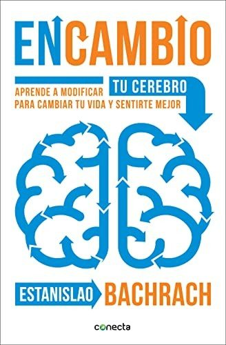
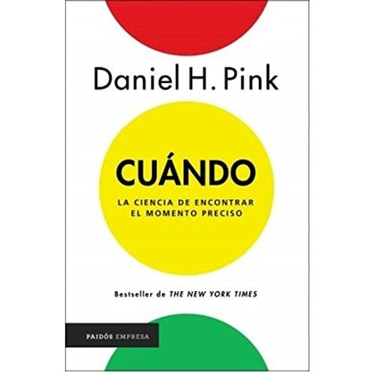
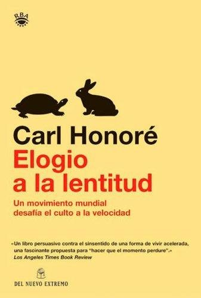
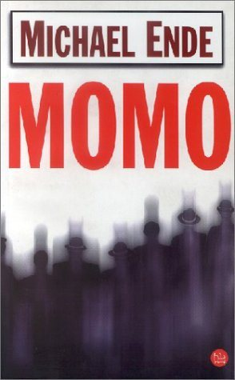
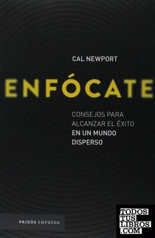

Libros de tiempo, planificación y cambios vitales
Libros de tiempo, planificación y cambios vitales en español: 10 fichas de títulos actuales.
Cuatro mil semanasOliver Burkeman
Cuatro mil semanasOliver BurkemanEnCambioEstanislao Bachrach
EnCambioEstanislao Bachrach
CuándoDaniel H. Pink
CuándoDaniel H. Pink
Reinventarse. Tu segunda oportunidadMario Alonso Puig
Reinventarse. Tu segunda oportunidadMario Alonso PuigElogio de la lentitudCarl Honoré
Elogio de la lentitudCarl Honoré
Los 7 hábitos de la gente altamente efectivaStephen R. Covey
Los 7 hábitos de la gente altamente efectivaStephen R. CoveyMomoMichael Ende
MomoMichael Ende
¿Quién se ha llevado mi queso?Spencer Johnson
¿Quién se ha llevado mi queso?Spencer JohnsonEnfócateCal Newport
EnfócateCal Newport
IndistraíbleNir Eyal
IndistraíbleNir EyalTemas relacionados
¿Estás eligiendo carrera?
Haz gratis el test de orientación vocacional de AURZANE: intereses, aptitudes, autoconcepto y hábitos de estudio, con informe completo.